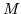
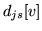
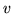

Discrete probability HMMs model observation sequences which consist of symbols drawn from a discrete and finite set of size . As in the case of tied-mixture systems described above, this set is often referred to as a codebook.
The form of the output distributions in a discrete HMM was given in equation 7.3. It consists of a table giving the probability of each possible observation symbol. Each symbol is identified by an index in the range 1 to and hence the probability of any symbol can be determined by a simple table look-up operation.
For speech applications, the observation symbols are generated by a vector quantiser which typically associates a prototype speech vector with each codebook symbol. Each incoming speech vector is then represented by the symbol whose associated prototype is closest. The prototypes themselves are chosen to cover the acoustic space and they are usually calculated by clustering a representative sample of speech vectors.
In HTK, discrete HMMs are specified using a very similar
notation to that used for tied-mixture HMMs. A discrete HMM can
have multiple data streams but the width of each stream must be
1. The output probabilities are stored as logs in a scaled
integer format such that if  is the stored discrete
probability for symbol  in stream  of state
of state  , the true
probability is given by
, the true
probability is given by
As an example, Fig [*] shows the definition of a discrete
HMM called dhmm1. As can be seen, this has two streams. The codebook
for stream 1 is size 10 and for stream 2, it is size 2. For consistency with
the representation used for continuous density HMMs, these sizes are encoded
in the  NumMixes
NumMixes specifier.
specifier.
![\framebox[85mm]{
\begin{minipage}{85mm}
\begin{program}
\par
\mbox{$\sim$\text...
...4 \\
\> \> ... \\
\mbox{$<$\textsf{EndHMM}$>$}
\end{program} \end{minipage} }](img246.png)